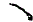
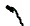
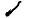
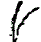
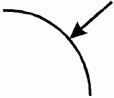
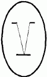

Отче наш
Ако ви дадат една научна тема, колко енергия човек изхарчва, когато отваря очите си, колко енергия изхарчва на ден за отварянето на очите си, може ли да определите? Кое е най-важното в живота? – Трябва да се живее добре. Кое е най-важното? Кое е най-важното, кое е на пръв план в живота? Казвате: Красив и грозен човек. В какво седи красотата? В какво седи грозотата? Коя е основната черта на красотата, коя е на грозотата? Казвате: Красив човек. Коя е основната черта на красотата? Природата е дала мерки. Няма какво да ги измисляте. Онези мерки, които тя е вложила, с тях ще си послужите. Как бихте познали едно семе дали е живо или мъртво? Ако го посеете и не израства, какво ще кажете? Или може би сте го посели и сте го турили много надълбоко и затова не израства. Или сте го посели много плитко и затова не израства. Казвате: Някой човек е щастлив. Коя е основната черта на щастливия човек? Де му е щастието? Щастливият човек се отличава, има основни черти щастливият. Вас основните неща не ви интересуват. Болният човек отгде го познавате, че е болен? Веднага казвате, че е болен. После веселия човек или скръбния човек по какво го познавате? Представете ми един образ на весел човек и един образ на радостен човек, и един образ на скръбен човек. Где е радостта на човека? туй е радост. 
– туй е скръб. Устата на щастливия човек е такава . Скръбният човек е скръбен, понеже е дал повече; радостен е, понеже е взел повече. Скръбен е, защото е дал. Казва: Отидоха ми парите. Бърка в джоба си и по невнимание е дал и казва: Отидоха парите. Или пък е взел повече и е радостен. Всеки, който се радва, взема нещо. Ти се радваш, понеже си взел повече светлина, скърбиш, понеже повече тъмнина е влязла. Сега искате да градите, говорите за формули, казвате: Той е щастлив човек, той е радостен човек. Това са формули. Трябва да разложите тази формула. Той е учен човек, с формули си служи. В какво седи неговата ученост? Как сте познали дали е учен човек или не? Казвате: Той е много любопитен. Как ще познаете, че е много любопитен? – Носът му е нагоре. Любопитството има два знака. Единият знак е 
, а другият знак е 
, едното е весело любопитство, а другото е скръбно любопитство. Те са малки работи. Някой път косата не е зад ухото причесана или отпред на главата. Ако имаш път, ще бъде добре, ако нямаш път, ще се спънеш. Ако пътуваш по едно добре направено шосе, ще пътуваш добре, ако пътуваш по едно шосе недобре направено, ще иждивиш повече енергия. Всичките хора, с които влизаме в общение, които ни дават повече, те са неприятни. Които вземат от нас, ни са неприятни. Казваме: Този човек е неприятен. Някой път вземеш съзнателно, някой път вземеш несъзнателно. За пример някой път се ръкуваш с човека и ръката ти става студена. Щом се ръкува с тебе, той ти е отнел от твоята топлина, нему е приятно ръкуването. Студената ръка отнема топлината. И на тебе ти е неприятно. Може при едно ръкуване да хванеш треска или простуда. Хората няма какво да се ръкуват, като са студени или като са много горещи, няма какво да се ръкуват, ще се изгорят.
В природата приемането и даването са най-малките процеси, но много зависи от тях. Колко години е взело на орела да завие, да направи човката си завита 
. После на краката си направил нокти завити. С краката си хваща и с клюна си хваща. Колко време е взело да образува тази закривена човка? Или да кажем, имате един навик, някой обича да се шегува. Има карикатуристи – художници, които виждат смешното. Носът ще тури не тъй както е, ухото, очите ще тури, тъй както не са. Като влезе в обществото, обръща внимание на дрехата. После, рединготът как е разцепен отзад? Защо трябва да е разцепен рединготът? Кои са причините? Целият въпрос е там, че рединготът не е разцепен там, гдето не трябва. Разцепката е много малка, а някой път е по-голяма. Или пък някой път ръкавите са по-широки или по-тесни. Имате вътрешна риза с копчета и външна по-широка. Ръкавите на свещениците са много широки. На свещениците разцепени са дрехите. Ще кажете, тия неща не са важни. Седи пред вас един човек сам, смее се, интересува ви. Какво добивате, след като се е смял? В Америка има лекари, които лекуват болните със смях. Дойде някой болен при лекаря и му казва: Господин докторе, стомахът ме боли. Като му каже това и лекарят започне да се смее. Казва: Не се смей, умирам. Той продължава да се смее: Кис – кис. Смее се, смее се, докато най-после и болният започва да се смее. Докато болният разправя за болката – как го боли, той се смее. Щом започне да се смее и болният, лекарят казва: Сега ще платиш. И онзи изважда и плаща. Може би половин час да се е смял лекарят. Ще каже, че е учен човек, той се смее. Онзи го обижда, той се смее. Сега този не е единствен метод, много енергия се харчи, не е лесна работа да се смее. Знаеш колко енергия се харчи. Казвате: Със смях лекува, много енергия се харчи, не е практичен метод. Като няма друг метод, може с него да лекува. Тогава щом ви заболи коремът, засмейте се. Като дойде някой да ви разправя, че ви боли кръстът, започнете да се смеете, да видите колко време ще мине, докато ви оздравее кръстът. Коя е най-сериозната болка? Изместването на някоя става. Някой път става изместване на някоя нишка в мозъка. Някои нишки има много деликатни и може би малко се е изместила тази нишка, 1/10 от милиметъра се е изместила и веднага причинява болка. Трябва тази нишка да я наместиш и веднага изчезва болката. Често става изместване на нишките в зъбите. Заболи те зъбът, изместила се нишката. Теченията не стават правилно, повече динамична енергия има. Капилярните съдове се свили, има повече кръв, набира се кръв. Понеже кръвта е нечиста, има малки твърди частици около капилярните съдове и се образува триене.
Мисълта е, която държи нервната система в изправно положение. Практически защо трябва да мисли човек? Най-първо и животните мислят, за да държат в изправно положение своята нервна система. Всички функции на движението зависят от направлението на ума. Добрите чувства поддържат туй направление как трябва да става. Оттам се дава енергия. Най-първо, защо трябва да мислим? Не може да бъде здрав човек, ако не мисли. Твоята нервна система няма да бъде изправна, ще имаш неразположение. Твоето неразположение се дължи, понеже умът не държи в изправно положение нервната система. Вие търсите причините. Причините са вътре. На всяко едно малко неразположение не търсете причината вън. Едно малко неразположение може да се дължи на една нишка в нервната система, която се е мръднала нанякъде. Казвате: Той ме обиди. Заболя ме. На кое място те заболя? Там, дето се е мръднал нервът. Там чувстваш болката. Като те обидят, има нишки на обидата.

Тук се намира честолюбието на човека или ония закони, с които трябва да пазите правата, които човек има. Що е достойнството на човека? – Да държиш в изправно положение нервната система. Второто достойнство на човека е, че трябва да имаш нормална топлина в твоята симпатична нервна система. И третото положение е, че всички мускули трябва да бъдат нормално обтегнати. Казвате: Той не е ял. Той като е ял, отместил е някоя нишка. При правилното ядене нишките хармонично се свиват. Някой път човек яде само на едната страна, става асиметрично лицето му. Ако ядеш само на дясната страна, дясната страна става по-голяма и лицето става несиметрично. Не яжте само на дясната или само на лявата страна. Яжте на дясната, после на лявата. Пак на дясната, пак на лявата и т.н. Някои от вас, гледам, дишате през дясната ноздра и носът е сплеснат. Не диша този човек, не трябва да бъде сплеснат носът. Сплеснатият нос носи страдания. Като дишаш, носът няма да бъде сплеснат. Щом не дишаш, носът ще бъде сплеснат. Ако човек не приема достатъчно количество въздух, за да упражнява носа си, се ражда едно състояние. В дишането на всички липсва нещо. Много рядко ще срещнеш човек, който да диша музикално. Чувам като диша някой и чувам тоновете на дишането. Особени тонове има. Който не диша правилно, един дисонанс има. Като диша, не може да се седи наоколо. Казвате: Култура. Човек, който не знае да диша, той не е културен. Един човек, който не знае как да гледа, да си отваря очите, той не е културен. Казва: Отвори си очите. Ти като не знаеш как да ги отвориш, музикално трябва да мигате. Гледам, вие не мигате музикално. В сегашната система говорите за едно възпитание, което много дисонанси има. Сега туй е твърдение. В какво седи дисонансът? – вие сте свили тялото. Туй състояние след час и половина какво състояние ще произведе в тебе, ако така седиш? Ти мислиш и надолу гледаш? Защо? Ако туй положение не го изправиш, може след една година то да внесе един дисонанс и ще те сполети някаква неприятност. Ти отпращаш всичката енергия към земята, става изтичане надолу. Но ако изгубиш туй равновесие, веднага ще паднеш на земята. Изгубване на равновесието има. Изгубване на равновесието на ума има. Ако ти изгубиш равновесието на твоята мисъл, има падане. Ако ти изгубиш равновесието на твоите чувства, страданието ще дойде. Ако ти изгубиш равновесието на твоята воля, огънеш се или се пречупваш. Има известни нишки, които може да се огънат и пречупят в нервната система. Този въпрос като не се обяснява научно, ще се уплашите. Казвате: Чакай да не огъне някоя нишка. Всяка сутрин като стане човек, като цигулар, който свири на цигулка, трябва да извади камертона и да нагласи четирите струни на цигулката. После като вземе лъка, да го намаже. Сутрин как се нагласявате? Как нагласявате ума си? Всички вие търсите. Онези, които свирят на китара, не могат да нагласят китарата. Онези, които свирят на цитра, не могат да нагласят цитрата, на арфа – не могат да нагласят арфата. Онези, които свирят на пиано, не може да нагласят пианото. Не е лесна работа да нагласиш едно пиано. Ние тук имаме свършили музика, но те не знаят да си нагласят пианото. Да нагласиш арфата е доста трудна работа. Гледам тия цигулари – майстори как нагласяват. Онзи, който не е майстор, стегне повече струната, после я разпусне повече и пак я стегне, и скъса струната. Отвива, завива, докато нагласи. Някой път си се разсърдил и в кожата си не можеш да се събереш. Пет пари му е церът на туй. Някой път може в тъмна стая да влезеш денем, да няма никаква светлина. Че в тъмното мога да те бутна по носа, на едно място и веднага ще изскочи гневът. Във видело не може да се бута, за да не видиш. Ефектът е да не знаеш. Може да научиш нещо, само когато не го знаеш. Ако чакаш и го знаеш, няма да го научиш. Вие преди да знаете, искате да знаете. Съсредоточиш си вниманието, искаш да знаеш. Никога не може да го научиш. За да го научиш, ти трябва да бъдеш в тъмно. И да те бутне природата. Там, гдето те бутне, ще ти повлияе. Ако го чакаш, няма да го научиш. Казваш: Аз искам да го видя. Никога няма да научите работата с виждане. Нали сте виждали някой път, че каквото е състоянието на природата, същото е във вас. Отвън е тъмно, облачно, мрачно и в тебе е облачно и мрачно. Изведнъж се случва, ще се отвори небето, изясни се, блесне слънцето. После пак се затвори небето. Пак се отвори. Отвън се отвори и вътре се отвори. Затвори се отвън и вътре се затваря. Казваш: Защо не се отваря горе? По някой път природата е много чувствителна. Каквото правиш ти, и тя го прави. Някой път каквото тя прави, и ти го правиш. Някой път ти трябва да направиш нещо, за да го направи и тя. Допуснете сега, че някой път някой ви е обидил и вие си стиснете устата. При тази обида със стискането на устата ти влошаваш работите си. Допуснете, че вие имате да давате на един ваш приятел 10 лева. Казваш, че след един ден ще му платиш. Той дойде и казва: Дай ми десетте лева. Казваш: Нямам. Този отговор нормален ли е? Ти имаш 10 лева, но понеже си търговец, казваш, "Нямам" и си мислиш "Нека почака". Ти не говориш истината, имаш 10 лева да платиш. Бръкни в джоба и плати десетте лева. Ти казваш "Нямам" и с туй напакостяваш на себе си. Срещнеш някого и му дължиш нещо. Преди няколко деня ти беше натъжен, наскърбен, той ти каза една добра дума. Ти вече дължиш нещо. На другия ден той е натъжен, казва : Дай ми. Казва: Нямам време сега. Значи за тебе хората са имали време, а ти нямаш време. Знаеш ли какво нещо, е като кажеш "Нямам време"? Какво подразбирате под думите "Нямам време". Аз разбирам "Не искам да го направя". Време има, колкото искаш. Природата е богата с време. Време колкото искате има. Един цигулар казвал, че нямал време да свири. Не че няма време да свири, но системата, в която е турен, не може да свири. И според тази система няма време. Време има, колкото искаш. В "алегро" времето е бързо, в "анданте" времето е дадено, казва: Нямам време. Как ще кажеш "Нямам време", откъде можеш да вземеш времето? Вие не сте еднакво кредитирани с време. Банката на времето е отстрани на челото. (Учителят показва центъра на времето.) Като нямаш време, ще идеш при банката да вземеш колкото ти трябва. Как ще определите колко време ви трябва? Времето е свързано с този център. Никога не можеш да изпееш една песен добре, ако не разпределиш времето. Времето ще създаде формата, в която ще се изрази цялата песен. Една песен, за да се изпее, тоновете трябва да бъдат ясни, после трябва да бъдат съдържателни, плътни. Може да уподобим един ясен тон на един хубав плод, който има красива форма.Този плод трябва да съдържа сладчина в себе си, която трябва да реагира върху езика. Трето положение е: туй, което си взел от ябълката, трябва добре да го сдъвчеш. Сега често вие казвате: Давай. Право ли е или не? Много си бързал някой път и страдаш от недоимък на време. Някой път никак не си бързал и страдаш от изобилие на време. Казвам: "Давай" – и останала една част от времето и те безпокои. Като има време, те безпокои и като няма време, те безпокои. Представете си, че имате едни чорапи, които са широки и дълги. Като ги туриш в обущата, образуват се гънки. Тия гънки в хода те безпокоят. Чорапите трябва да прилепнат напълно на крака, да не се образуват тия гънки. Някой път вие казвате: "Давай", но грубо. Някой път казвате меко: "Давай". Съображенията ви какви са, като казвате меко или грубо? Някой път набързо го казваш. Нямаш време. Ако идеш при някой човек и вземеш тона на думата "давай", както подхожда на него, той веднага ще бръкне в джоба си и ще ти даде. Но ако кажеш "давай" така, че не подхожда на него, той нищо няма да ти даде. Той ти казва: Поотложи малко. Ако разпуснато говориш, той ще ти каже: Поотложи. Ако бързо го кажеш, в него ще се зароди желание да ти даде. Сега искате някой да ви направи услуга, искате услугата много бързо. Някой път искате услугата и той ти казва: Поотложи малко. Погрешката е там, че не сте взели основния тон на "давай" и за туй даването не става, както трябва. Във вас има един навик – посели сте една семка, тя най-първо израства нагоре, после този клон, който израсне, навеждате го, навежда се растението надолу. Имаме една буря и тя може да го наведе полегнато на 45 градуса. Клоните го държат, но с голямо усилие се държи, той знае как се държи. По някой път е полегнал към север, ние имаме един полегат бор на север и той казва: Изгревчани трябва да обичат Истината повече от всичко друго. Ако беше полегнал към юг, щеше да показва, че трябва да бъдат добри. Щом се изгуби равновесието между две точки, правата се отклонява. Щом стане крива, тогава има падане. Като няма опорна точка, падане има. В растенията има опорна точка. Щом тежестта мине пред перпендикуляра отпред, има падане. Дотогава, докато теченията между Слънцето и Земята текат правилно, ти може да ходиш. Щом се изгуби туй равновесие, ти падаш. И умът губи своето равновесие; и сърцето губи своето равновесие, и волята губи своето равновесие. Законът е все същ. Между тия двата полюса става движението. Щом остане само единият център, губи се равновесието. Човек сам по себе си има една елипсовидна форма.

Нашият живот е елипсовиден. Представете си, че това е челото, имате носа, устата. В дадения случай чувстванията имат по-големи впечатления, по-големи чувства, а волята е по-слаба и мислещата сила е по-слаба. Разстоянията не са равни. Разстоянията между челото и устата е по-голямо от другите. Имате тия три успоредни линии. Имате четири линии, където се проявява човешката разумност, човешките чувства и човешката сила. След туй чувствата имат по-малко (сила) и за разумността има най-малко. Тогава трябва да превърнете част от силата на волята в своя разумност. Трябва да направите второ превръщане от разумността да дадете на своите чувства. Някой път от ума трябва да се вземе тази енергия. Но в живота повече сърцето кредитира. Сърцето е главната банка, която кредитира. Затова трябва да избягвате страданията. Сърцето може да кредитира всичките дългове за изплащане. Страданията на хората зависят от това, че умът разполага с енергиите на сърцето и волята разполага с енергиите на сърцето. Сърцето само изплаща. Те казват: Отпуснете пари. Умът не мисли откъде сърцето взема тази енергия. Волята, и тя не мисли откъде ще се вземе тази енергия. Ако не дава сърцето, нахвърлят се, ругаят го, че нямало любов. Всички вие казвате: Той няма любов. Тъй не се говори. Разбойникът като иде при касиера да му услужи, без чек му дава. Като извади револвера, казва: Давай парите, или ще те утрепя.
Всички вие в живота носите револвери. Извадиш револвера, стреляш. "Ако не даваш, няма да те обичам". Ако не му даваш пари, казва, че няма да те обича. Как ще се възпита? Цяла система трябва. Учителят преподава. И той, и аз носим някой кобур. Учителят в училището е с кобур и учениците, и те показват кобури, цял скандал става. Вие ще благодарите, че светът е доста прогресирал. Най-първо българското възпитание е започнало с фалангата. Знаете (ли) какво нещо е фалангата? Те са две дървета, между които се турят краката, стягат се в тях. Двама ученика държат краката нагоре, учителят с една тояга удря по краката. Считали едно време, дето не учи човек, че краката са виновати, биели краката. Доста учени са станали. Второто положение дошло да бият задницата. Вторият метод е бил, че един ученик ще хване онзи, когото ще бият, под рамото си и учителят удря по задницата. Възпитавало се седалището. Третото положение: ръцете са виновати. Не знае урока, държат ръката отговорна. Учителят взема една дрянова пръчка, удря по ръката. След туй са възпитали ръцете, дошло лицето. След плесницата методът на възпитание какъв ще бъде? Вместо да го бият, ще го погладят, идват до истинските методи. Майката хване детето, което направило пакост, не го туря във фалангата, не го бие по задницата, но хване го, милва го по лицето. Четвъртото положение: всички казват, че няма кой да го милва, а е възпитателен процес, влиза във възпитанието. Милването може да става не само от друг, но и сам човек може да се милва. Вие хванете някой път, кършите пръстите си грубо. То е стар метод. Ще помилваш сам ръката си. Искаш другите хора да те милват. Ще знаеш как да милваш пръстите си. Някой път с кърпата хващате грубо носа си. Казвам: За в бъдеще има отлични методи за възпитание. Сега втория път помисли как трябва да си бутнеш ръката. Ухапе те някой комар, удряш с ръката си. Духни го. Възпитай този комар. Комарът като иде при другите, ще каже: Намерих едно добро същество. Като направиш десет пъти така, по-малко ще те хапят комарите, отколкото ако удряш и ги биеш. Комарите казват: Убиха един наш другар, претрепаха го, ние ще си отмъстим. Тия неща са преувеличени, за да ги видите.
Ако имате –+ ; +- минус и плюс и плюс и минус, каква е разликата? Имате да вземате 20 лева и да давате 10 лева. 20 – 10 на какво е равно? Или имате да давате 20 лева и да вземате 10 лева, -20 +10, какъв е знакът? В първия случай оставате 10 лева да вземате, а във втория случай остават 10 лева да давате. В природата в дадения случай зависи какви са процесите. Някой път вие се упражнявате, но всякога остава един недоимък. Някой път вие се упражнявате и всякога остава едно имане във вас. Всяка мисъл, която свършва с недоимък, процесът не е довършен. Всяко чувство, в което оставя недоимък, процесът не е довършен. Всеки процес, който не е довършен, оставя в бъдеще нещо да се прави. Природата обича завършените процеси. Има изключения, но общото правило е: Никога да не се оставя една работа недовършена.
Сега това е натоварване на съзнанието. Дръжте следната мисъл: Природата обича порядъка. Този е сложен въпрос. Не е лесна работа да знаеш как да постъпиш. То е труден въпрос, изисква се време.
Дръжте мисълта: Природата обича порядъка на нещата.
Само светлият път на Мъдростта води към Истината, в Истината е скрит животът.
34. Лекция на Младежкия окултен клас, държана от Учителя на 25.VI.1943 г., Петък – 5 ч.с.
София – Изгрев